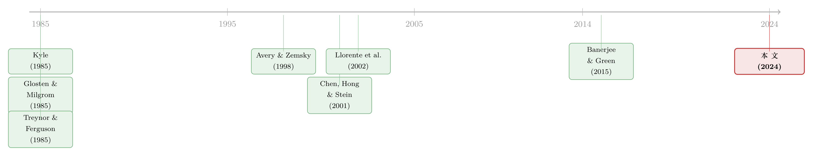

你手里的「独家消息」，可能整个市场早就知道了
本文读的是 Peress & Schmidt (2024, JFE)：一个投机者拿到私有信号时，最揪心的问题不是「信号对不对」，而是「这消息是不是早就被别人交易进价格里了」。当投机者用近期的价格走势去判断自己信号的「新鲜度」、而做市商又预料到这一点时，价格对买单和卖单的反应会变得不对称，并依赖于过去的价格走势——其最干净的「指纹」是：收益的偏度与滞后收益负相关。作者用 1993–2014 年全样本美股证实了这一点。
1 一个被几乎所有模型回避的问题
先做个思想实验。
你是一个对冲基金经理，今天挖到了一条关于某家公司的正面信息——比如它下个季度的订单远超预期。你很兴奋，因为这看起来是一笔稳赚的交易。但在按下买入键之前，一个念头闪过：这条信息，会不会别人早就知道了？
这不是杞人忧天。如果过去几天这只股票已经悄悄涨了不少，那么很可能别人也拿到了同样的消息、并且已经交易过了——换句话说，你以为的「独家」其实是陈旧信息（stale news），价格里早已包含了它，你再买进去只是高位接盘。
这个困扰真实、普遍，而且要命。可奇怪的是，几乎所有关于知情交易的经典理论——从 Grossman and Stiglitz (1980) 到 Kyle (1985)——都把它假设掉了。这些模型默认了一种「过分慷慨」的共同知识：所有市场参与者都确切知道谁观测到了什么类型的信号、有多少知情者在场。可现实里，一只股票的不确定性是多维的——需求、竞争、并购、技术、监管……谁能精确知道，在每一个维度上，到底有多少别的投资者已经先你一步行动了？
作者给这种困扰起了个名字：uncertainty about what is in the price（关于「价格里到底已经包含了什么」的不确定性，下称 UWIP）。它和文献里常见的另一种不确定性不同：以往研究多关心不知情者不确定「场上有没有知情者」（即逆向选择有多严重）；而本文关心的是知情者自己不确定「我到底有多知情」——我手里的信号，是真·新鲜货，还是别人嚼过的剩饭？
接着，一个自然的问题是：当投资者带着这种「我的信号到底新不新鲜」的疑虑去交易时，市场的均衡会长成什么样子？
2 第一个洞见：投资者会盯着过去的价格
要回答这个问题，先得想清楚一个带着 UWIP 的投资者会怎么行动。
这一点其实早在 Treynor and Ferguson (1985) 就被点破过（他们当时是用它来「为技术分析辩护」，但并没有写出均衡）：投资者会依赖过去的价格走势，来判断自己信号的新鲜度。
直觉是这样的。假设你刚挖到一条正面信息，但不知道它是否已经反映在价格里。你扭头去看最近的价格：
- 如果股价刚刚涨过——糟糕，很可能别人已经先知道了同样的消息并买入推高了价格，那么你的信息大概率是陈旧的；
- 如果股价刚刚跌过——那这个下跌一定是被别的信息驱动的，你手里的正面消息并没有体现在价格中，于是你判断自己的信息是新鲜的。
结论很反直觉但很合逻辑：拿着正面消息的投资者，会在价格刚下跌后更激进地买入，在价格刚上涨后反而更克制。 价格走势成了投资者衡量自己信息优势的「温度计」。
但真正关键的一步，在于市场的另一边。
3 第二个洞见：做市商也不是傻子
如果只有投资者在偷偷盯着过去价格，那还不够有趣。本文的核心贡献——据作者所知是文献里全新的一笔——在于：做市商（market maker）预料到了投机者的这种行为，并据此调整报价。
于是反转出现了。
在价格刚上涨之后，做市商会想：现在如果来了一波买单，这买单很可能来自那些「拿着陈旧正面消息」的人——因为价格已经涨过，新鲜的正面消息本就稀少。既然买单可能只是陈旧信息的回声，它包含的真实新信息就少，做市商于是调低买单的价格冲击（price impact）。反过来，同样在价格上涨后，一个卖单就显得格外可疑、格外有信息含量（谁会在涨势里逆势卖？多半是真知道点坏消息），做市商会对卖单反应更剧烈、把价格压得更狠。
把这两边合起来看，一个优美的不对称就浮现了：
价格上涨后：买单冲击小、卖单冲击大，且因为投机者可能在追陈旧的正面消息，买单更可能出现 → 两个力量都让收益更负偏。 价格下跌后：对称地反过来，收益更正偏。
这就引出了全文最干净、最可检验的预测：
收益的偏度（skewness）与滞后收益负相关。 涨得越多，未来收益越负偏；跌得越多，越正偏。
而且——这一点至关重要——它在正向和负向的滞后收益上对称地成立。这正是 UWIP 区别于其他理论的「指纹」。
4 模型：把这个故事一步步算出来
光讲直觉不够，本文的力量在于它用一个极简的模型把上面的故事显式地推导了出来。我们跟着走一遍。
4.1 设定
三个日期 \(t=0,1,2\)；三类参与者：做市商 M、投机者（知情者）S、噪声交易者；一只股票。
股票在 \(t=2\) 支付红利 \(\theta=\theta_1+\theta_2\)，其中 \(\theta_1,\theta_2\) 相互独立，各自以等概率支付 \(+\sigma\) 或 \(-\sigma\)。因此
$$\theta=\begin{cases}+2\sigma & \text{prob } 1/4\\ 0 & \text{prob } 1/2\\ -2\sigma & \text{prob } 1/4\end{cases}$$
这个「红利由两块拼成」的设定，正是为了刻画一只股票的基本面来自多个不确定性来源这一现实。
- \(t=0\)：还没有投机者和噪声交易者。做市商 M 观测到其中一块 \(\theta_m\)（\(m\in\{1,2\}\) 等概率），并把价格定为其期望：\(p_0=E(\theta\mid\theta_m)=\theta_m\)。
- \(t=1\)：一个单位质量、具有均值–方差效用、风险厌恶系数为 \(\gamma\) 的投机者 S，观测到其中一块 \(\theta_s\)（\(s\in\{1,2\}\) 等概率），并在看到 \(p_0\)（即 \(\theta_m\)）后提交市价单。同时噪声交易者提交一个在 $[-1,+1]$ 上均匀分布的随机订单 \(n\)。总订单流 \(\omega_1\) = 投机者订单 + 噪声订单。
由于 \(m\) 与 \(s\) 独立抽取，M 与 S 以等概率观测到同一块（\(m=s\)）或不同块（\(m\neq s\)）。这正是 UWIP 的来源：当 \(m=s\) 时，S 的信号其实早被 M 定进了 \(p_0\)，是「陈旧」的；当 \(m\neq s\) 时，才是「新鲜」的。而 S 在交易时并不知道自己落在哪种情形。
为保证订单流不会完全泄露信息（否则模型就没意思了），作者加了一个假设：
假设 1. \(\gamma\sigma>3\)。
4.2 基准：没有 UWIP 的世界
要看出 UWIP 的效果，先得有个「没有它」的对照组。
情形 A：\(m\) 和 \(s\) 都是共同知识。 此时双方都知道彼此看的是哪一块。若 \(m=s\)，S 没有信息优势，干脆不交易，\(p_1-p_0=0\)；若 \(m\neq s\) 且 \(\theta_s=\sigma\)，S 买入数量 \(x_{(1)}\)。投机者的最优订单由均值–方差效用的一阶条件给出，这是全文最核心的一个方程：
这个一阶条件读起来非常符合直觉：预期利润越大、就越敢下单；风险厌恶越强、剩余不确定性越大，就越收手。
我们把它算到底。在 \(m\neq s\)、\(\theta_s=\sigma\) 时，可以算出
$$E[\theta-p_1\mid p_0,\theta_s=\sigma,m\neq s]=\sigma(1-x_{(1)}),\qquad Var[\,\cdot\,]=\sigma^2 x_{(1)}(1-x_{(1)})$$
代回一阶条件：
$$x_{(1)}=\frac{\sigma(1-x_{(1)})}{\gamma\,\sigma^2 x_{(1)}(1-x_{(1)})}=\frac{1}{\gamma\sigma x_{(1)}}\;\Longrightarrow\;x_{(1)}^2=\frac{1}{\gamma\sigma}\;\Longrightarrow\;x_{(1)}=\sqrt{\frac{1}{\gamma\sigma}}$$
均衡的价格变化是一个三段函数（订单流足够大就推断出 \(\theta_s\)，居中区间学不到东西）：
$$p_1-p_0=\begin{cases}+\sigma & -x_{(1)}+1<\omega_1\le x_{(1)}+1\\ 0 & x_{(1)}-1\le\omega_1\le -x_{(1)}+1\\ -\sigma & -x_{(1)}-1\le\omega_1 注意这里的关键特征：价格变化 \(p_1-p_0\) 完全不依赖于滞后价格 \(p_0\)。 一个买单或卖单触发的价格变化，大小与之前价格如何无关。 情形 B：只有 \(m\) 是共同知识。 这是做市商不确定「场上是否有知情者」的经典设定（接近 Banerjee and Green (2015) 关心的那种不确定性）。这时价格函数变成五段（多了 \(\pm\frac{1}{3}\sigma\) 两档），但结论不变：价格变化依然不依赖 \(p_0\)。 直到这里，价格反应都是对称的、与历史无关的。而当投机者面对 UWIP——即他自己也不知道 \(m\) 是否等于 \(s\)——时，这个性质第一次被打破：价格变化开始依赖滞后价格 \(p_0\)。 这是因为，投机者的下单强度现在要对「我的信号可能陈旧」这件事做贝叶斯加权，而他用 \(p_0\)（相对于无条件均值的偏离方向）来更新这个概率。做市商完全预料到了，于是把这种依赖定价进了报价函数：在价格上涨后，对买、卖单给出不同的冲击。模型由此产出三条可检验的核心预测——价格、收益偏度、交易策略，全都跨买卖订单不对称、且依赖此前的价格走势。 作者还在多个扩展里证明这个不对称是稳健的：在市价单与限价单、报价驱动与订单驱动市场中都成立；在引入「从价格学习」和投机者风险厌恶后依然存在。在一个动态的 Glosten and Milgrom (1985) 框架里，他们进一步发现：若投机者的信号互不相关，UWIP 的效应会随时间消散；若信号相关，则会持续。但无论哪种情形，UWIP 总在投机者刚看到一次价格变动、却说不清是哪条消息驱动的那一刻起作用。 模型给了一个独特的「指纹」，但现实中价格冲击的不对称可以有别的来源。本文最漂亮的地方，恰恰是它能把自己的预测和两条主流的替代解释反向区分开。 这两条都预测：跟在买单后面的买单，冲击更大。而本文的模型预测恰恰相反：跟在前期买单（价格上涨）后面的买单，因为可能来自追陈旧消息的人，信息含量更低、冲击更小。现实中这几条渠道当然共存，谁占上风是个纯粹的实证问题。 数据。 作者用了 1993–2014 年在 NYSE 交易的美股全样本，从 TAQ 日内数据估计每日收益偏度，用 Lee and Ready (1991) 算法从日内成交推断交易方向、构造每日的交易不平衡（trade imbalance）。价格冲击用了四个互相独立的代理变量：(i) 带符号的 Amihud (2002) 非流动性比率（称 price impact costs）；(ii) lambda——五分钟区间内收益对带符号订单流回归的斜率；(iii) 基于报价的价格冲击——成交后五分钟中间价的百分比变化；(iv) ln(Amihud)。一题四答，互为稳健性。 先看偏度。 每日收益偏度与滞后收益显著负相关：滞后收益增加一个标准差（1-SD），偏度下降约9% 的一个 SD。更关键的是——与那些依赖卖空约束的替代理论（如 Chen et al., 2001 的「分歧 + 卖空约束」）不同——这个关系在正向和负向滞后收益上同样强，并且对卖空成本（卖空约束松紧的代理）不敏感。这正好戳中了那些理论的软肋：它们能解释「高过去收益后偏度更负」，却解释不了对称的另一半「低过去收益后偏度更正」，而后者在数据里同样强。 再看价格冲击。 在净买入的交易日，价格冲击成本与过去收益负相关；在净卖出的交易日，则与过去收益正相关。换句话说：当此前收益为正时，买单引发的冲击更低（做市商明白你可能在追陈旧消息）；当此前收益为负时，卖单引发的冲击更低。量级上，滞后收益每增加 1-SD，会让正（负）交易不平衡日的价格冲击成本下降（上升）约 7%–8% 的一个 SD，从而在买、卖日之间撬开约 15% 的 SD 的楔子。 最后是一组「UWIP 越低、效应越弱」的安慰剂式检验，四箭齐发： 这四组结果共同坐实：是非公开信息、投资者的知情程度、信息的复杂度在驱动这些现象——而不是别的。 作者也很诚实：模型还有另外三条预测（UWIP 降低价格信息含量、让波动率负向依赖过去收益、高 UWIP 股票要求更高预期收益）。但这些预测并非 UWIP 独有，且很难与私有信息的逆向选择风险（Easley and O'hara, 2005）区分开。波动率–收益的负向依赖（即「杠杆效应」）在 Banerjee and Green (2015) 里也会出现。所以本文只检验 UWIP 独有的那两条——偏度与价格冲击对过去收益的不对称反应。 把这条线索捋一捋，能更清楚地看到本文站在哪里。 故事的源头是知情交易的两大基石：Kyle (1985) 的连续拍卖与内幕交易、Glosten and Milgrom (1985) 的买卖报价模型——它们奠定了「做市商从订单流学习」的范式，但都建立在「信息结构是共同知识」的假设上。Treynor and Ferguson (1985) 则是一颗早被埋下却没发芽的种子：他们指出投资者可以用过去价格判断自己信号的新鲜度，但只把价格当外生、没写出均衡。  接着，一批工作开始松动共同知识假设：Avery and Zemsky (1998) 让多维不确定性催生羊群行为；Banerjee and Green (2015) 让投资者学习「别人是在交易信息还是噪声」，得到价格对消息的不对称反应（但其不对称来自风险溢价，与本文机制不同）；Easley and O'Hara (1992) 让做市商不确定投机者是否观测到了信号。这些模型里学习的人本身都是不知情的——他们无法把自己的信号实现与价格结合起来更新。而本文的核心，恰恰是投资者自己的信号实现与近期价格走势之间的相互作用。 另一条平行的线是偏度：Harvey and Siddique (2000)、Chen et al. (2001) 发现收益偏度与滞后收益负相关，但机制多依赖泡沫或「分歧 + 卖空约束」。本文的贡献，是给这个老现象提供了一个只需要（完全理性的）投资者不确定自己有多知情的简洁解释，并补上了对称的另一半。还有一条是陈旧信息交易的实证文献（Huberman and Regev, 2001; Tetlock, 2011），本文则论证：即便是老练的投资者，也可能难以判断私有信号的真实价值，从而误交易于陈旧信息。 Q：UWIP 和经典的逆向选择，到底差在哪？ 经典逆向选择是「不知情的做市商怕碰上知情者」。UWIP 是「知情者自己怕手里的信号其实是陈旧的、早被定进价格」。前者的学习主体不知情、只能从价格被动学；后者的学习主体有自己的信号实现，把它和价格走势结合起来更新「我有多新鲜」。正是这个「自有信号 × 价格走势」的交互，产生了依赖滞后价格的不对称——这是经典模型给不出的。 Q：偏度与滞后收益负相关，难道不是「分歧 + 卖空约束」（Chen et al., 2001）早就解释过了吗？ 那类理论只能解释「高过去收益后偏度更负」，因为它依赖卖空约束暂时压住坏消息。可数据里，「低过去收益后偏度更正」这半边同样强——而卖空约束理论对这半边无能为力。本文的对称机制能两边都覆盖，且其效应对卖空成本不敏感，恰好把两类解释分开。 Q：这个机制方向上和「动态投机」「存货风险」是反的，会不会在数据里互相抵消、什么都测不出？ 三条渠道确实共存，方向也确实相反，所以这是个纯实证问题。本文在全样本里测出的净效应与 UWIP 一致（买单跟在涨势后冲击更小），说明在平均意义上 UWIP 至少没被另两条压倒。但这也意味着，在某些子样本（如明显分批建仓的股票）里，符号有可能翻转——作者没有逐一拆解每条渠道的相对权重，坦承「还需更多工作」。 Q：盈余公告后效应减弱，会不会只是因为公告后波动大、噪声把信号淹了？ 这是个合理的担忧，但作者用了多个互补检验来收窄解释：不仅公告后弱，公共信息多（大股、覆盖多、入指数）也弱、复杂公司强、散户订单弱。这四个维度指向的都是同一个潜变量——「投资者对价格里已含什么的把握程度」，而不是单纯的波动率高低。多维度的一致性，是比单一公告检验更强的证据。 Q：做市商真有那么聪明，会按「价格涨过、买单可能是陈旧消息」来动态调价吗？ 模型里这是理性预期均衡的要求，现实中未必有人显式这么想。但价格冲击是做市商集体报价的产物，只要平均而言他们对「涨势后的买单信息含量更低」做出了反应（哪怕是通过算法、经验法则），数据里就会留下这道指纹。本文测的是均衡结果，不需要每个做市商都「想清楚」这套逻辑。 Q：为什么要强调这是「完全理性」模型？ 因为陈旧信息交易此前多被归因于注意力约束、相关性忽视或非理性过度反应（如 Fedyk and Hodson, 2023）。本文想说的是：即便人人完全理性（除了惯常的噪声交易假设），仅仅因为不确定自己有多知情，就足以让老练投资者误交易于陈旧信息，并在均衡里产生这些可观测的不对称。这把现象从「行为偏误」抬升到了「理性均衡的必然结果」。 1. 把 UWIP 搬到公司债市场。
【经济故事】公司债的信息环境比股票更不透明、更多维（评级、契约、发行人关联、行业冲击），「我的信号是不是早被定进价格」的疑虑应当更严重；而做市商主导的报价驱动结构，恰是本文机制的天然舞台。
【可行性】中。TRACE 提供成交与方向，但日内报价质量与流动性远不如股票，价格冲击代理需重新设计；偏度在低频成交的债券上难估。识别上可借「评级公告/盈余公告前后」做事件窗，类比本文的公告检验。 2. 外资持有人与 UWIP 的横截面。
【经济故事】外国投资者通常被认为信息劣势、对本地消息「新鲜度」的判断更差，UWIP 对他们应更强；若做市商也据此区别对待外资订单流，会留下可测的不对称。
【可行性】中–低。需要能识别订单流国别归属的数据（多数市场不可得），可退而用「外资持股比例高/低」的股票分组做横截面比较，识别较弱但 doable。 3. UWIP 与价格信息含量。
【经济故事】模型预测 UWIP 让风险厌恶的投机者更不敢交易，从而降低价格的信息含量。这条预测虽难与逆向选择区分，但可借公告/复杂度这些 UWIP 代理做差分检验：UWIP 高的股票，价格对未来基本面的预测力是否更弱？
【可行性】中。价格信息含量有成熟度量（如 Chen et al., 2007 的投资–价格敏感性、Foucault and Fresard, 2012）。挑战在于把 UWIP 的效应从一般逆向选择里剥离——这正是作者明言「留给未来」的难题。（学习从价格的实证脉络，可参见《价格会「教」分析师做预测吗？》与《想知道投资者信什么？去问价格，别问问卷》。） 4. 高频拆解三条渠道的相对权重。
【经济故事】UWIP、动态投机、存货风险在符号上彼此冲突。能不能用日内逐笔数据，按「是否分批建仓」「做市商存货偏离」分层，把净效应拆回每条渠道？
【可行性】中–高。TAQ + 做市商存货代理（或 Kyle's lambda 的时变估计）可支撑分层回归，技术上 doable，难在干净地标注「分批建仓」这一不可观测状态。 这是一篇理论驱动、实证收口做得相当漂亮的论文。它的真正贡献，不在于又发现了一条「偏度–收益」相关性（那早有人发现），而在于找到了一个旧假设的裂缝——「信息结构是共同知识」——并证明：只要把知情者自己也拉进「我有多知情」的不确定里，就能在一个完全理性的均衡中，同时解释偏度的对称依赖、价格冲击的买卖不对称、以及它们在公告后/聚光灯下的一致减弱。能用一个机制串起三类现象，而别的理论做不到，这是有分量的。 对识别，我的担忧有两点。其一，全样本测出的是 UWIP、动态投机、存货风险三股力量的净效应，论文说服我们「UWIP 平均没被压倒」，但没说清它在多大比例的股票/时段里真正主导——「指纹」存在不等于它是主犯。其二，那一组「UWIP 低则效应弱」的检验虽多维一致、很有说服力，但每个代理（公告、规模、覆盖、复杂度、散户）都同时和别的东西相关（流动性、波动率、关注度），严格的排他性论证仍偏弱。 后续我最想看到的，是把这套机制搬进信息更不透明、做市商更重要的市场（公司债是首选），看 UWIP 的指纹是否更深、更易识别；以及有人能真正把三条渠道的相对权重拆开称重——那将把这篇「证明它存在」的论文，推进到「量出它有多重要」的下一程。4.3 真正关键的一步：引入 UWIP
5 识别策略：从理论到数据
6 主要结果：指纹对上了
7 文献脉络
8 评论与延伸（Q&A + 研究方向）
(a) 几个可能的疑问
(b) 几个可能的研究问题与提案
9 我的判断
参考文献